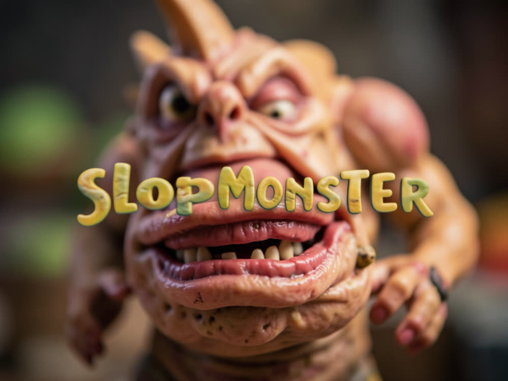
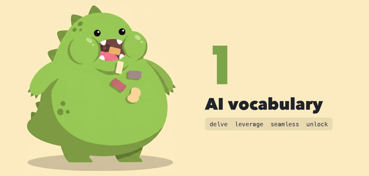
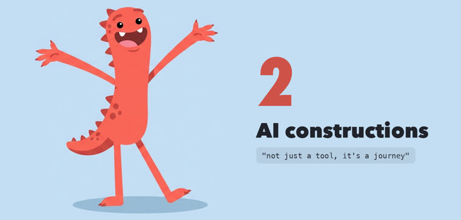
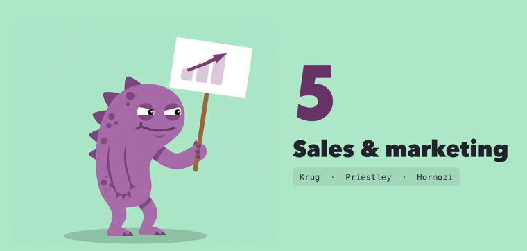
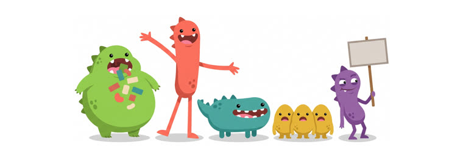

Dá nota de 0 a 5 ao seu texto, aponta cada marca de máquina e pode derrubar o build. Depois um modelo de outra família limpa o rascunho.

Texto de IA tem cheiro: delve, seamless, unlock, "it's not just a tool, it's a journey". O leitor percebe e para de confiar. O SlopMonster acrescenta duas coisas que as outras ferramentas pulam.
Cinco grupos de padrões, um ponto cada. Abaixo de 5/5 o comando sai com erro, então funciona como portão de CI. Desenvolvedor chama isso de linter.
Se o Claude escreveu, o GPT limpa. Se o GPT escreveu, o Claude limpa. Um modelo não escuta o próprio sotaque. O script se recusa a mandar o rascunho de volta pra mesma família.
Nada de "10.000 clientes felizes" que o negócio não tem. Qualquer número ao lado de substantivo de gente é marcado. Se o número é real, --allow-proof vira aviso.
O pontuador tem a primeira e a última palavra, porque o pontuador é honesto e o modelo é persuasivo. "Quase limpo" é como uma página acaba soando igual a todas as outras páginas de IA da internet.
Mata delve, seamless, robust, unlock, elevate, leverage. Troca por uma palavra mais simples, não por sinônimo chique.
Mata not just X, but Y, a lista de três por reflexo, pilha de travessões, ressalvas empilhadas e o resumo de fechamento que ninguém pediu.
Um número específico por afirmação. Frases de tamanhos bem diferentes. Uma aresta: uma contração, um fragmento, uma frase começando com "E".
Cai em um grupo e perde um ponto. Quatro grupos tiram o sotaque de IA. O quinto pergunta se a linha vende alguma coisa.
Duas listas. A primeira casa pela raiz: elevate pega elevates e elevating. A segunda casa palavra por palavra, pra não marcar "we craft furniture by hand".
17 formas de frase, não palavras. not just X, but Y, say goodbye to, that's where X comes in, e perguntas que o autor responde sozinho.
Dois travessões dentro de uma janela de 220 caracteres. Ponto e vírgula só acima de um piso proporcional ao tamanho da página.
faster, smarter, and better. Estreito de propósito: só dispara em três palavras soltas com vírgula de Oxford, ou numa frase curta fechando a oração.
Número ao lado de substantivo de gente, tipo 10,000+ happy users. Dispara fácil de propósito: um alarme falso custa dez segundos, um erro deixa uma mentira no seu site.
O catálogo é só em inglês. Texto em português recebe 5/5 porque o pontuador não lê a língua, não porque está limpo. A limpeza com modelo rival funciona em qualquer língua.
O pontuador é Python puro, biblioteca padrão, sem dependência nenhuma. A limpeza usa a CLI codex ou claude. Sem nenhuma das duas, o script imprime o prompt pra você colar num chat.
Qualquer versão 3 recente. O CI do projeto roda em 3.11.
# confere a versão python3 --version
Sem instalação. Os scripts rodam direto da pasta.
git clone https://github.com/inematds/SlopMonster cd SlopMonster
Pra limpeza automática: codex se você escreve com Claude, claude se escreve com GPT.
# uma das duas, conforme a família do rascunho which codex claude
Todos os comandos são reais e rodam da raiz do repo. O exemplo do passo 1 dá 3/5 de propósito.
Passe o texto direto. O pontuador nomeia cada marca e sai com código 1 quando fica abaixo de 5.
python3 tools/deslop.py --text "It's not just a tool, it's a game-changing journey." # → score 3/5, aponta as duas marcas, exit 1
Em HTML ele lê só o que o visitante enxerga. Em markdown, pula trechos de código, blocos cercados e texto riscado, porque literal não é texto de venda.
python3 tools/deslop.py index.html python3 tools/deslop.py index.html --view hero # um elemento pelo id python3 tools/deslop.py README.md
O texto limpo sai no stdout, as notas do que mudou saem no stderr. Leia as notas: às vezes o modelo apaga a sua linha de fechamento e só avisa ali.
tools/cleanse.sh rascunho.md > limpo.md 2> notas.txt # escrevendo com GPT? force o Claude como limpador: DESLOP_WRITER=gpt tools/cleanse.sh rascunho.md > limpo.md
Um modelo de ponta é ótimo em tirar marcas e bem capaz de colocar outras novas enquanto faz isso. Limpeza sem repontuar é cara ou coroa.
python3 tools/deslop.py --text "$(cat limpo.md)" # só publica em 5/5
Se o número é verdadeiro e você consegue provar, a regra 5 vira aviso e ainda imprime os acertos pra você conferir.
python3 tools/deslop.py index.html --allow-proof
O workflow do repo roda os testes e pontua o texto publicado a cada push. Copie pro seu repo e aponte pro arquivo com o seu texto.
cp .github/workflows/slop.yml <seu-repo>/.github/workflows/ # dentro do yml, troque examples/gate-sample.txt pelo seu arquivo python3 tools/deslop.py --text "$(cat examples/gate-sample.txt)"
Copie a pasta pra skills e chame. O SKILL.md é markdown puro, então serve pro Codex e outros agentes também.
cp -r SlopMonster ~/.claude/skills/slopmonster/ # no Claude Code: /slopmonster, "tira o slop disso", "isso parece IA?"
O catálogo casa pela raiz da palavra, e um atalho de stemming errado deixa o pontuador meio cego em silêncio. A suíte é o que pega isso.
python3 tools/test_deslop.py bash tools/test_cleanse.sh
Linhas reais do site da Ridgeline Roofing e uma rodada sem edição na home do Jasper.ai, que foi de 3/5 pra 5/5 numa passada, com sentido intacto e nada inventado. Registros completos em examples/ no repo.



